The Buddhabrot is a unique and captivating fractal, showcasing a remarkable blend of mathematical intricacy and natural beauty. It's not just a visual marvel; it represents a deep mathematical concept rooted in complex numbers and iterative algorithms.
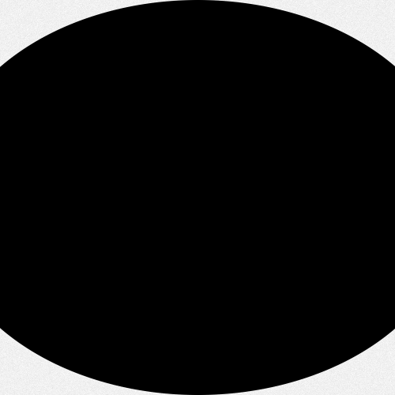 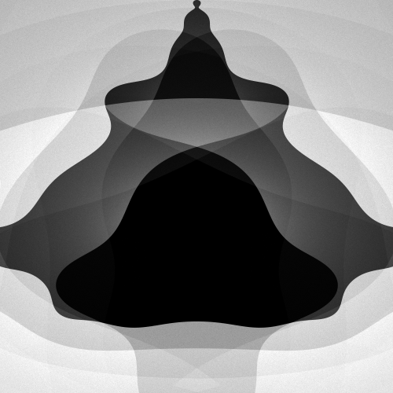 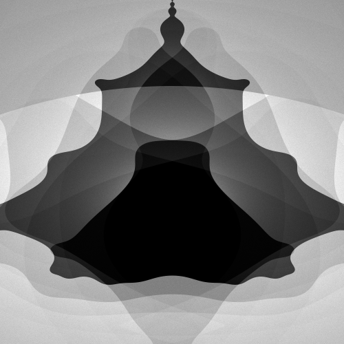 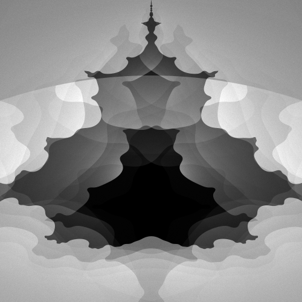
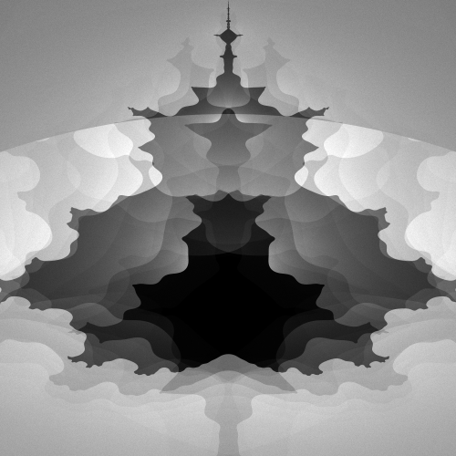
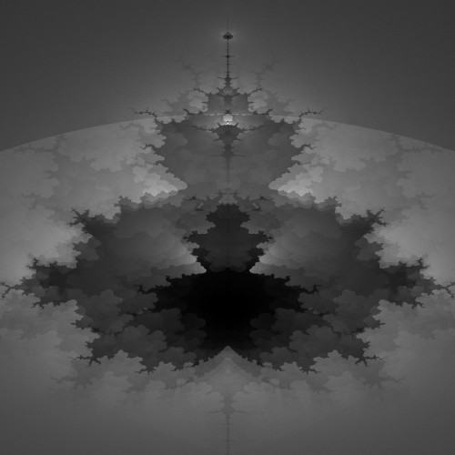
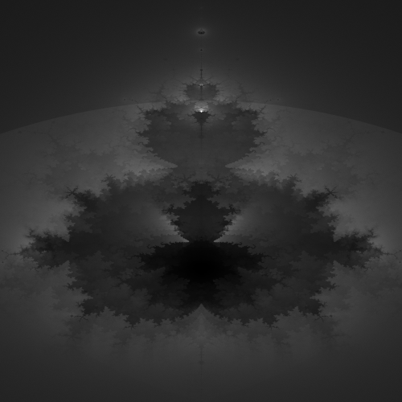
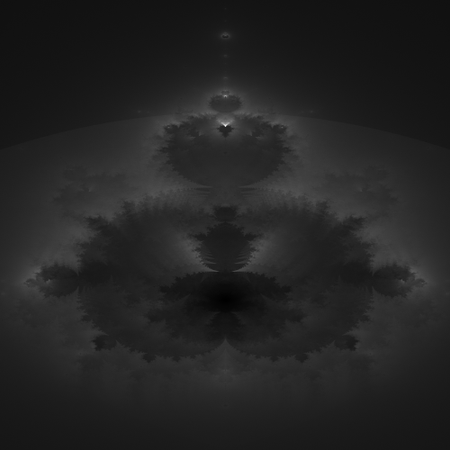
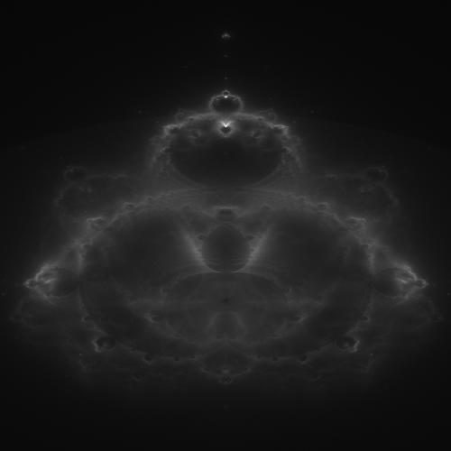
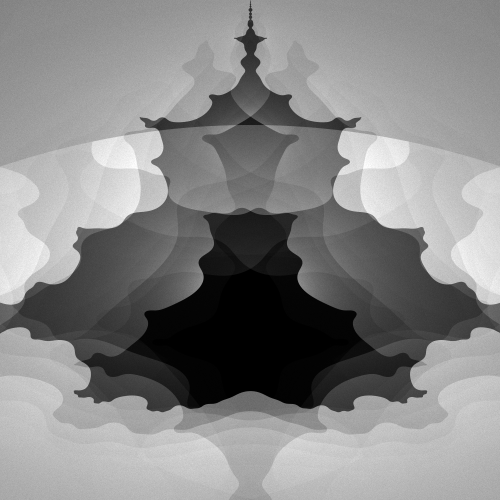
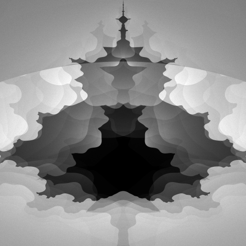
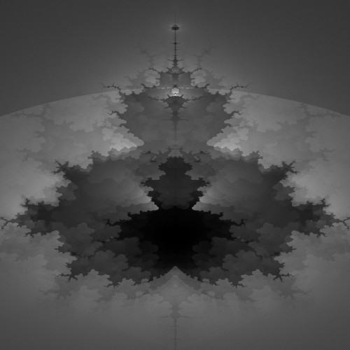
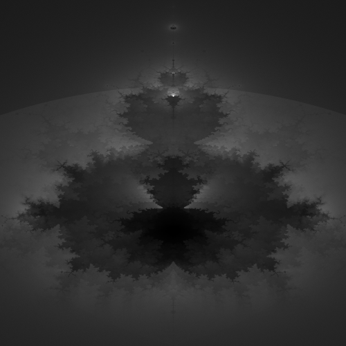
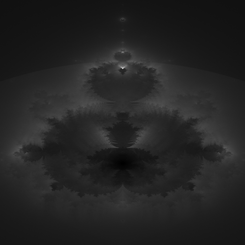
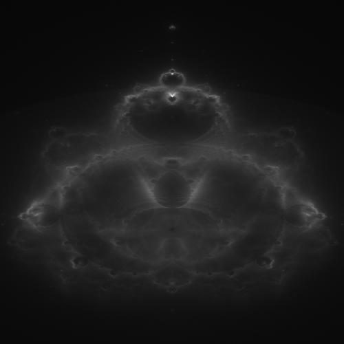
At its core, the Buddhabrot is an alternative representation of the Mandelbrot set. It is generated through the iterative process of complex number transformations. Each point on the complex plane is iterated using the formula zn+1 = zn2 + c, where z is a complex number and c is the constant coordinate of the point being tested. Points that do not escape to infinity reveal the fractal's intricate structure.
The beauty of the Buddhabrot lies not only in its complexity but also in its visual appeal. Its intricate patterns and symmetries resonate with our appreciation for aesthetics, bridging the gap between abstract mathematics and tangible art. This fractal has become a symbol of the fascinating interplay between order and chaos, serving as a source of inspiration for artists, mathematicians, and enthusiasts alike.
Exploring the Buddhabrot reveals the inherent beauty of mathematics. It provides a visual language for complex concepts, making them accessible and engaging. This fractal embodies the unity of science and art, demonstrating how mathematical structures can give rise to stunning visual masterpieces.